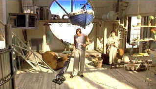

| Circus (SE)/ C+, A |
| Colu,mbia/2000/95/ANA
1.85 |
Circus has got more acrobatic moves than a
Chinese team of high flyers. It starts out setting up some promising
characters and relationships and then goes off the deep end. Circus
is flying with no net and when pieces start falling from every direction
they tend to go splat int he saw dust.
To say Circus jumps about in confusing
narrative leaps is probably an understatement. The script strains for
cleverness and sacrifices. Gratuitous violence is liberally
sprinkled throughout Circus. Yes, it sometimes gives the flick a
dangerous edge, but mostly it's excess moves without substance or
necessity.
 |
| Leo
does housekeeping. ©Columbia |
When Leo is reluctantly pulled back into mob
by Bruno, it simply provides a center of violence for all the wild
twists and turns that Circus writer David Logan has scripted. Leo
and girlfriend Lily are looking for the big score and early retirement.
Bruno wants his casino turning a profit again. Moose wants his
girlfriend back. Julius is looking for the score of a lifetime. Eddie
wants Leo's book debt paid up, and Elmo just wants a little payback.
Rob Walker is the director juggler, throwing
more characters in the air at the same time than should be asked of any Circus
performer. He has a flare for visual style and Circus certainly moves at
a frenetic clip.
Famke Janssen has a face made for noir. She's
vulnerable yet savvy; underneath the beautiful exterior is an
intelligence that comes through in every performance. Her Lily is a
pleasure. Brian Conley is a find as Bruno. Nastiness is second
nature to him. He plays tough with a variety of rubbery facial
expressions that read dangerous. John Hannah, while appealing in
some roles flicks like Sliding Doors, doesn't seem wholly
comfortable in the action ring. And you gotta like gargantuan Tiny
Lester as Moose, an explosive force of nature.
Circus is an absolutely stunning DVD
that does justice to the flashy and sumptuous production design. Lots of
high light output and snappy contrast range. Shadow detail is excellent
and blacks are positively lustrous. The transfer elements are in perfect
shape and every precious bit of detail is resolved to perfection. Color
saturation is vibrant with excellent range and depth. Dolby Digital 5:1
surround information is well placed.
Columbia has packaged Circus as a
special edition. Audio commentary from from writer David Logan and
producer James Gibb is featured along with some deleted scenes. A making
of featurette is standard fare and production stills and talent bios
complete the picture. .
|
|
|
|
 Selections from the Feature Archive
include articles on Akira Kurosawa, Frank Darabont, Blonde Bimbos, Hollywood Street Gangs, or Vietnam: The Hollywood Pariah, and many
more.... Selections from the Feature Archive
include articles on Akira Kurosawa, Frank Darabont, Blonde Bimbos, Hollywood Street Gangs, or Vietnam: The Hollywood Pariah, and many
more....

Is North by Northwest Hollywood's definitive exploration of the
nose? From schnozzles to beezeers, film mavens make the most of the
foremost. Click on Mount Hitchcock for more.


Glenn Erickson's insightful DVD reviews have been a Internet fixture for
several years. Check out some of his sophisticated feature articles.
Currently hosted by DVD Talk.

ISF Monitor
Calibrations in the Tristate New York area. Lots of hardware info
and frequent hardware peaks from video expert Kevin Miller. They may be
judgmental, but that's the point, isn't it. Lots of DVD reviews plus
news and more.

MRQE
Find reams of movie and DVD
reviews at the Movie Review Query Engine, a index of reviews appearing
on the Internet.

Mystery writer Fred Hunter digs into classic
films on DVD. Check out his insightful reviews at The Classics on DVD.

Michael Douglas in Falling Down, looks quizzically at Robert Duval: 'You mean,
I'm the bad guy'
|